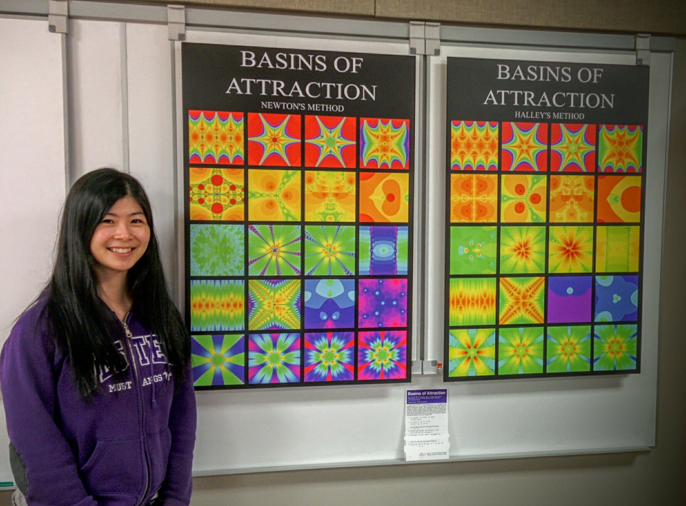

Solutions to the Rootfinding Chapter Exercises
Solutions to the Rootfinding Chapter Exercises¶
1: Write down as many questions as you can, about this section.
What is the oldest method for finding roots of equations? What is the best way to solve polynomials? Can you solve them analytically? Is there a best way to solve them? How do you solve multivariate polynomials (more than one equation in more than one unknown)? Can you count the number of solutions independently so that you know when you have found them all? What’s the difference between an equation and an identity? Can there be infinitely many solutions to a single equation? (Sure: \(\sin(x)=0\) has solutions \(k\pi\) for any integer \(k\)) Can an equation have no solutions? (Sure: \(\exp(z) = 0\) has no finite solutions). Can an equation have accumulation points of solutions? (An accumulation point is a place where things pile up infinitely; an example is the set \(1/k\) for integers \(k\), which has an accumulation point at \(0\)). Can we solve every polynomial equation in terms of continued fractions? Are there polynomial matrix equations, and can they be solved by Newton’s method? What happens with multiple roots, such as \(z^2-2z+1=0\)? If there are two solutions to an equation, which one is the right one? Can you find a formula for the integer solutions of an equation?
2: Sometimes Newton iteration is “too expensive”; a cheaper alternative is the so-called secant iteration, which goes as follows: \(z_{n+1} = z_n - f(z_n)(z_{n}-z_{n-1})/(f(z_n) - f(z_{n-1}))\). You need not one, but two initial approximations for this. Put \(f(z) = z^2-2\) and start with the two initial approximations \(z_0 = 1\), \(z_1 = 3/2\). Carry out several steps of this (in exact arithmetic is better). Convert each rational \(z_n\) to continued fraction form. Discuss what you find.
import numpy as np
niter = 10
z = np.zeros(niter)
y = np.zeros(niter)
f = lambda t: t**2 - 2.0
z[0] = 1.0
y[0] = f(z[0])
z[1] = 1.5
y[1] = f(z[1])
for k in range(2,niter):
z[k] = z[k-1] - y[k-1]*(z[k-1]-z[k-2])/(y[k-1]-y[k-2])
y[k] = f( z[k] )
print( z, y )
[1. 1.5 1.4 1.4137931 1.41421569 1.41421356
1.41421356 1.41421356 1.41421356 1.41421356] [-1.00000000e+00 2.50000000e-01 -4.00000000e-02 -1.18906064e-03
6.00730488e-06 -8.93145558e-10 -8.88178420e-16 -4.44089210e-16
4.44089210e-16 -4.44089210e-16]
If you do this problem using exact arithmetic, and convert the rational answers to continued fraction form, you get \([1]\), \([1;2]\), \([1;2,2]\), \([1;2,2,2,2]\), and so on, similar to Newton’s method. But there are \(1\), \(2\), \(3\), \(5\), \(8\), \(13\), \(21\), and so on partial quotients—these are Fibonacci numbers! Newton’s method converges quadratically in that the number of correct entries in the continued fraction doubles every time (or nearly; it’s off by one, maybe). The secant method converges at the rate of \(\phi = (1+\sqrt{5})/2 \approx 1.618\) because the ratio of successive Fibonacci numbers approaches \(\phi\) (quite quickly, really).
3: Try Newton and secant iteration on some functions of your own choosing. You should see that Newton iteration usually takes fewer iterations to converge, but since it needs a derivative evaluation while the secant method does not, each iteration is “cheaper” in terms of computational cost(if \(f(z)\) is at all expensive to evaluate, \(f'(z)\) usually is too; there are exceptions, of course). The consensus seems to be that the secant method is a bit more practical; but in some sense it is just a variation on Newton’s method.
This question doesn’t need an answer per se, because there are lots of examples all over the place, but perhaps your solutions need someone to look at them. Things that can happen: first, and most usual, your code works and the roots get approximated well quite quickly, and the residuals behave something like \(r_n = f(z_n) \approx C r_{n-1}^2\) where \(C\) is some constant. This is usually visible. If your residuals do not get small quickly, then you might have a bug in your code, or you might have a multiple root. Sometimes you can divide by zero (if \(f'(z)=0\) anywhere near), and sometimes the iteration can go off to infinity or minus infinity (if \(f(z) = \exp(z)\) then it could well go to \(-\infty\)).
4: Both the Newton iteration and the secant iteration applied to \(f(z) = z^2-a^2\) can be solved analytically by the transformation \(z = a\coth \theta\). Hyperbolic functions The iteration \(z_{n+1} = (z_n + a^2/z_n)/2\) becomes (you can check this) \(\coth \theta_{n+1} = \cosh 2\theta_n/\sinh 2\theta_n = \coth 2\theta_n\), and so we may take \(\theta_{n+1} = 2\theta_n\). This can be solved to get \(\theta_n = 2^n\theta_0\) and so we have an analytical formula for each \(z_n = a \coth( 2^n \theta_0 )\). Try this on \(a^2=2\); you should find that \(\theta_0 = \mathrm{invcoth}(1/\sqrt{2})\). By “invcoth” we mean the functional inverse of coth, i.e.: \(\coth\theta_0 = 1/\sqrt{2}\). It may surprise you that that number is complex. Nevertheless, you will find that all subsequent iterates are real, and \(\coth 2^n\theta_0\) goes to \(1\) very quickly.
NB This was inadvertently difficult. Neither numpy nor scipy has an invcoth (or arccoth) function. The Digital Library of Mathematical Functions says (equation 4.37.6) that arccoth(z) = arctanh(1/z). Indeed we had to go to Maple to find out that invcoth\((1/\sqrt{2}) = \ln(1+\sqrt{2}) - i\pi/2\).
niter = 5
r2 = np.sqrt(2)
x = 1;
#theta0 = np.arctanh(r2) # Apparently this is real only?
theta0 = np.log(1+r2) - (np.pi/2)*1j
coth = lambda z: np.cosh(z)/np.sinh(z) # Amazing that even this has to be defined
z = r2*coth(theta0)
print( r2, x, theta0, z )
for k in range(niter):
x = (x + 2/x)/2
z = r2*coth(2**(k+1)*theta0)
print( x, z )
1.4142135623730951 1 (0.8813735870195429-1.5707963267948966j) (1.0000000000000002+4.329780281177466e-17j)
1.5 (1.5000000000000002-2.164890140588737e-17j)
1.4166666666666665 (1.4166666666666667-1.2027167447714604e-18j)
1.4142156862745097 (1.4142156862745097-2.0808248176151256e-21j)
1.4142135623746899 (1.41421356237469-3.124994721214149e-27j)
1.414213562373095 (1.414213562373095+0j)
We see numerically that the formula matches the iteration, up to rounding error.
5: Try the above with \(a^2=-1\). NB the initial guess \(z_0 = 1\) fails! Try \(z_0 = e = \exp(1) = 2.71828...\) instead. For this, the \(\theta_0 = 1j\arctan(e^{-1})\). Then you might enjoy reading Gil Strang’s lovely article A Chaotic Search for \(i\).
niter = 5
x = np.exp(1);
#theta0 = np.arctanh(r2) # Apparently this is real only?
theta0 = 1j*np.arctan(np.exp(-1)) # strange initial guess
coth = lambda z: np.cosh(z)/np.sinh(z) # Amazing that even this has to be defined
z = 1j*coth(theta0)
print( 1j, x, theta0, z )
for k in range(niter):
x = (x - 1/x)/2
z = 1j*coth(2**(k+1)*theta0)
print( x, z )
1j 2.718281828459045 0.352513421777619j (2.7182818284590446+0j)
1.1752011936438014 (1.1752011936438014+0j)
0.1621415327022399 (0.1621415327022399+0j)
-3.0026548631469705 (-3.0026548631469714+0j)
-1.334808126895235 (-1.3348081268952354+0j)
-0.29281839085136163 (-0.2928183908513621+0j)
Again we see that the formula matches the iteration up to roundoff error, although it’s working with complex numbers. If we went for a few more iterations, though, we would see the rounding errors take over—this is a case where the iteration depends sensitively on initial conditions. This is a hallmark of chaos.
6: Try to solve the secant iteration for \(z^2-a^2\) analytically. You should eventually find a connection to Fibonacci numbers.
This is a fun exercise in trig identities. The solution can be found in the paper cited in problem 8 below.
7: People keep inventing new rootfinding iterations. Usually they are reinventions of methods that others have invented before, such as so-called Schroeder iteration and Householder iteration. One step along the way is the method known as Halley iteration, which looks like this:
which, as you can see, also involves the second derivative of \(f\). When it works, it works quickly, typically converging in fewer iterations than Newton (although, typically, each step is more expensive computationally). Try the method out on some examples. It may help you to reuse your code (or Maple’s code) if you are told that Newton iteration on \(F(z) = f(z)/\sqrt{f'(z)}\) turns out to be identical to Halley iteration on \(f(z)\).
We’ve done a lot of these. In the next unit, you will see fractal images from both Newton’s method and from Halley’s method. Here is Eunice with the resulting pictures from twenty functions, solved using Newton’s method and using Halley’s method.
{kind=link}
8: Try to solve Halley’s iteration for \(x^2-a\) analytically. Then you might enjoy reading Revisiting Gilbert Strang’s “A Chaotic Search for i” by Ao Li and Rob Corless; Ao was a (graduate) student in the first iteration of this course at Western, and she solved—in class!—what was then an open problem (this problem!).
The complete solution is in the paper linked above.